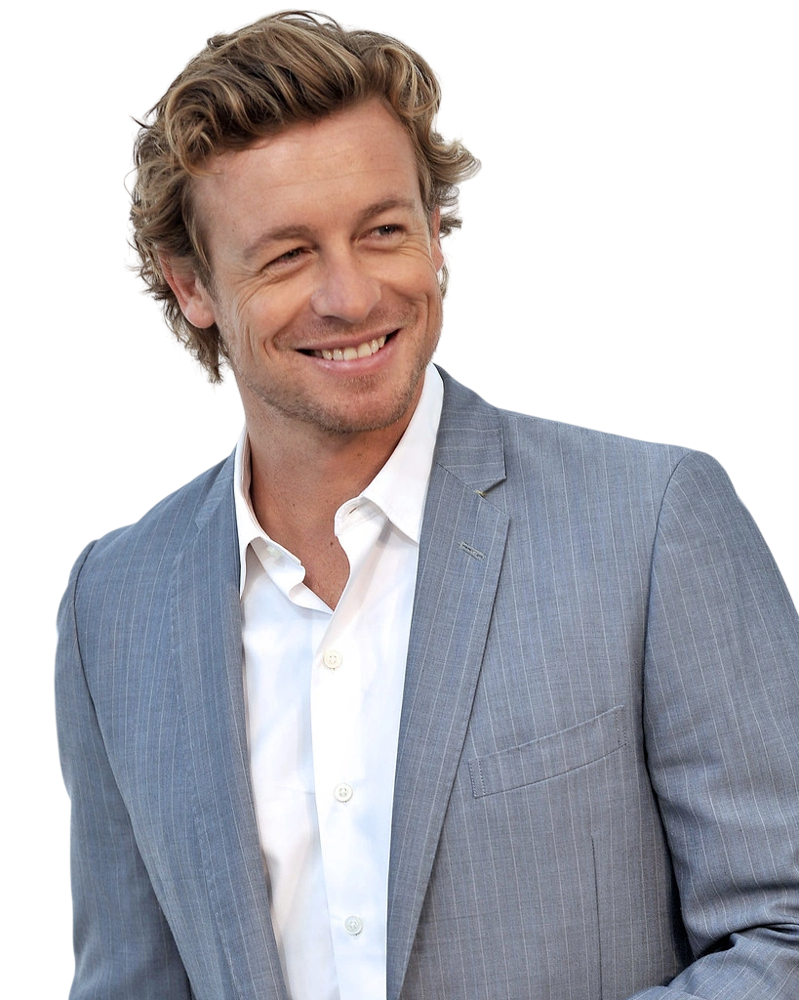

Замечать изменения
Речь, привычки и реакция на конкретный вопрос дают контекст. Отдельный жест сам по себе ничего не доказывает.
Служебный профиль · CBI
Консультант Калифорнийского бюро расследований
Консультант по поведенческому анализу. Работаю со свидетелями, проверяю версии и обращаю внимание на детали, которые легко упустить.

01 / Метод работы
Наблюдения помогают определить направление проверки. Выводы делаются только после сопоставления показаний и фактов.
Речь, привычки и реакция на конкретный вопрос дают контекст. Отдельный жест сам по себе ничего не доказывает.
Слова, обстоятельства и свидетельства должны складываться в одну версию. Если не складываются, работу нужно продолжать.
Неожиданный вопрос помогает проверить подготовленный ответ. Реакция — повод для уточнения, а не замена доказательствам.
02 / Опыт
Консультативная работа по делам, где важны показания, поведение участников и проверка нескольких версий.
Оценка поведения в контексте ситуации, выявление несоответствий в показаниях и формирование направлений для дальнейшей проверки.
Построение разговора, уточнение деталей и проверка того, насколько показания согласуются с установленными обстоятельствами.
Поиск слабых мест в предположениях, сопоставление доступной информации и проверка альтернативных объяснений.
03 / Подход
«Версия должна выдерживать проверку».
Ранее я выступал как медиум. Этот опыт научил меня отличать убедительное впечатление от подтверждённых сведений. В расследовании важны проверяемые факты, а не эффектные объяснения.
04 / Дополнительные сведения
Сведения о профессиональном прошлом и личных обстоятельствах, имеющих отношение к работе.
До работы с CBI я выступал как медиум. Мои навыки основывались на наблюдательности, знании человеческого поведения и сценических приёмах, а не на сверхъестественных способностях.
Сомневаться в очевидном, проверять удобные объяснения и не считать собственную уверенность доказательством. Это относится и к моим версиям.
Это личное дело, которое повлияло на мою жизнь и работу. Я не считаю личную заинтересованность преимуществом: она может мешать оценивать факты беспристрастно.